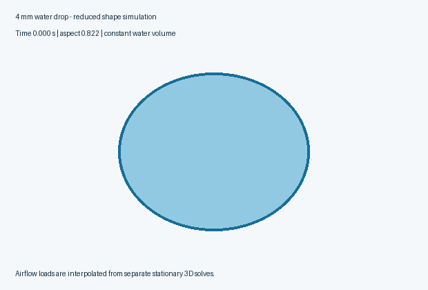
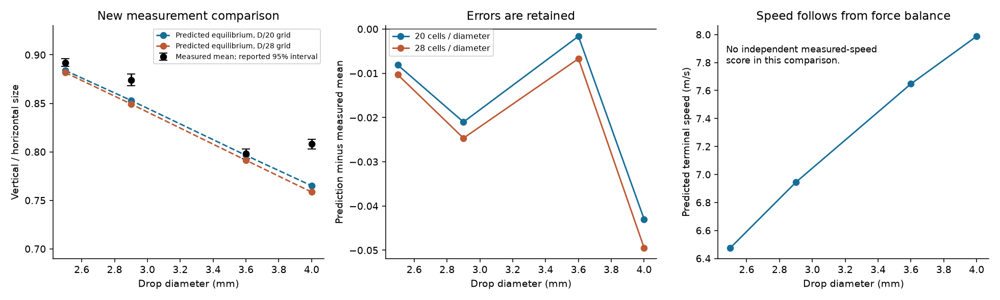
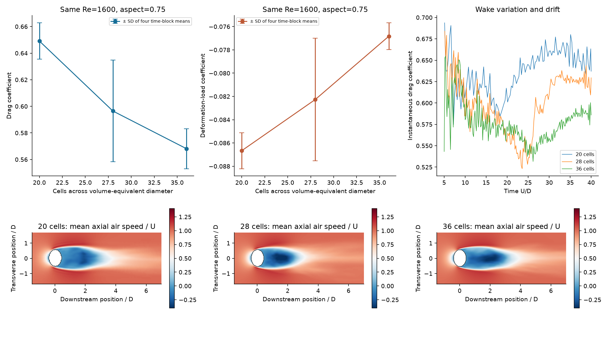
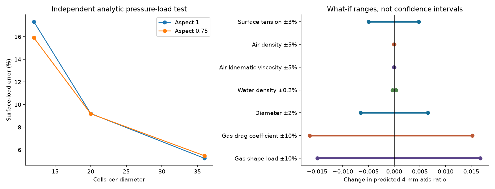
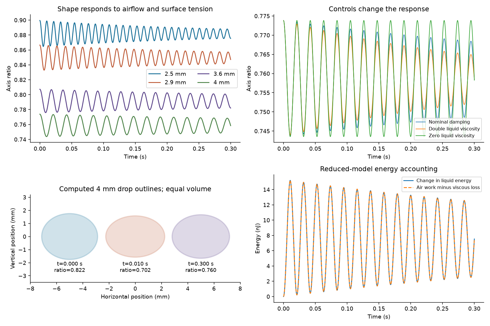

Streams and Rocks · Interim results — four checks unfinished · 20 October 2026
Raindrops that can change shape
The model now predicts flattening and oscillation from airflow, surface tension and liquid inertia. The water volume stays constant. Airflow uses a curved-surface treatment and finer grids.
24 of 28 planned three-dimensional airflow runs are complete, including two complete prediction tables and comparisons with four new measured shape outcomes. Simulations remain paused. This release publishes the saved results and identifies the unfinished checks.
Four checks remain unfinished
The interrupted run produced no final numerical record. It is excluded from the averages and predictions. Unfinished checks are not treated as passing. See the case-by-case status.
This is a reduced deformable-drop model, not a fully resolved two-fluid simulation. Gas loads come from separate stationary 3D flow calculations; a volume-preserving spheroid responds to those loads. The new measurement comparison is completed, but the model is not validated for real raindrops or smoke capture.
What changed
A responsive shapeSurface tension pulls the drop toward a sphere. Airflow flattens it. Liquid inertia allows overshoot and oscillation; viscosity removes energy. The resulting shape also changes the calculated drag and air load.
Finer airflow calculationsExact curved-surface intersections replace the old halfway staircase wall. The complete prediction tables use 20 and 28 cells across a drop. One completed 36-cell reference calculation checks further refinement at Re=1600. The Re=2600 refinement remains unrun.

Actual saved shape trajectory, shown slowly. This is the reduced liquid equation coupled to an airflow lookup, not a movie of a moving free-surface CFD calculation.
A new measurement comparison
All four preselected sizes are compared with Andsager, Beard and Laird’s laboratory measurements. No model coefficient was fitted to these values. Model and source choices preceded table extraction; search previews had already exposed qualitative findings, so this was not a blinded test.
Predictions use the complete 28-cell airflow table. Measured intervals are the paper’s reported 95% intervals for the mean; they exclude our model uncertainty. The model predicts equilibrium spheroids, while the experiment measures mean chord ratios of oscillating drops. Predicted speeds are not scored against correlation-derived speeds.
Mean absolute shape-ratio error is 0.0228. The 4 mm source mean is 0.808 in Table 2 and 0.807 in Table 3; both are preserved. That 0.001 discrepancy does not remove the larger modeling and resolution questions.
Refinement changes the mean absolute ratio error from 0.0184 to 0.0228; it does not improve agreement with these measured means. The largest drop remains too flat in the model. The measured 4 mm mean is slightly rounder than the 3.6 mm mean, whereas this equilibrium-spheroid model predicts continued flattening. Missing oscillation modes are a plausible limitation, not an experimentally isolated explanation of the discrepancy.

Do finer grids agree?
From 28 to 36 cells, drag changes by -4.7% and the deformation load by -6.6% in the reference case. The complete 20-to-28-cell comparison changes the predicted axis ratio by as much as 0.0065. These changes are evidence about numerical uncertainty, not proof of convergence.

The three reference gas cases have Re=1600 and aspect=0.75. Error bars are the standard deviation of four time-block means, not confidence intervals. Colors show mean axial air velocity divided by inlet speed. All controls are retained in the complete numerical table.
These are direct differences between completed calculations, not uncertainty bounds. The longer-averaging control remains unfinished, so late-wake averaging has not been checked.
The two independent lookup-interpolation checks have not been run. No interpolation-accuracy result is claimed.
The planned midpoint checks are separate from the experimental comparison and will not enter the prediction lookup.

Within this model, larger drops flatten more because their weight grows faster relative to surface tension. Changing air density mostly changes the speed needed to support that weight. This helps explain the sensitivity pattern; it does not resolve the missing oscillation modes seen in real drops.
Shape motion and controls

The initial disturbances are declared test scenarios. Their amplitudes were not fitted to photographed drops. Removing air forcing lets the shape relax toward a sphere; changing viscosity changes the damping. With zero liquid viscosity, oscillations persist in this reduced model.
Checks that passed—and what they establish
The small-amplitude 4 mm oscillation benchmark is 42.966 Hz. The damping check agrees with its analytic limit to about 0.009%. Exact spheroidal volume is preserved to floating-point precision. The independent manufactured surface-pressure test still has approximately 5.5% load error at 36 cells, so passing its 10% check is not high-accuracy validation.
The discrete gas ledger separates inlet/outlet mass transfer from small numerical leakage at interpolated walls. It closes to approximately 0.000029% of initial mass in the short verification case. Wall leakage itself is nonzero. Production mass offsets and this short ledger do not establish a full two-phase conservation test.
What remains unresolved
- The full liquid and gas interface is not advanced together. Internal circulation, surface mobility, non-spheroidal deformation, transverse modes and wake–shape locking remain absent.
- The viscous boundary layer and turbulent wake are not fully resolved. Grid, domain, lookup spacing and averaging errors remain; a stable run is not a direct numerical simulation claim.
- Individual measurement temperatures and local airflow were unavailable. The nominal material inputs are 20 °C; property and diameter sensitivity is reported separately.
- There are no new particle-capture or retention calculations here. Improved drop shape alone cannot validate smoke scavenging.
Reproduce and inspect
Run instructions · Equations, units and limitations · Numerical results · Measurement comparison · Transcribed measurements · Source audit · Original protocol · Recorded additions · Sensitivity results · Saved-data audit
Method references: curved-wall interpolation, regularized gas solver, drop oscillation and damping limits, and water surface tension. Material properties are not inferred from the earlier molecular pilot.